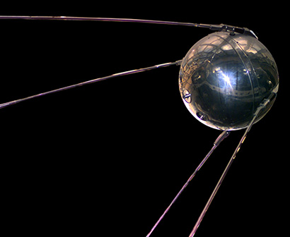
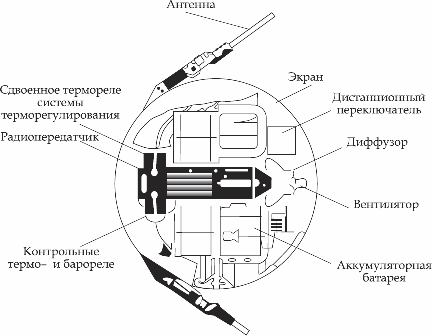

«Спутник 1» — первый в мире искусственный спутник Земли, советский космический аппарат, запущенный на орбиту 4 октября 1957 года. Кодовое обозначение спутника — «ПС-1».
История первого космического спутника и космических полетов в целом начинается с первой баллистической ракеты – Фау-2 (Vergeltungswaffe-2). Ракета была разработана известным немецким конструктором — Вернером фон Брауном в конце Второй мировой войны. Первый тестовый запуск прошел в 1942-м году, а боевой – 1944-м., всего было выполнено 3225 запусков в основном по территории Великобритании. После войны Вернер фон Браун сдался армии США, в связи с чем возглавил Службу проектирования и разработки вооружения в США. Еще в 1946-м году немецкий ученый представил Минобороны США доклад «Предварительная конструкция экспериментального космического корабля, вращающегося вокруг Земли», где отметил, что в течение пяти лет может быть разработана ракета, способная вывести на орбиту подобный корабль. Однако финансирование проекта не было одобрено.
13-го мая 1946-го года Иосиф Сталин принял постановление о создании ракетной отрасли в СССР. Главным конструктором баллистических ракет был назначен Сергей Королев.
 Следующие 10 лет учеными были разработаны межконтинентальные баллистические ракеты Р-1, Р2, Р-3 и др.
В 1948-м году ракетный конструктор Михаил Тихонравов провел доклад для научных кругов о составных ракетах и результатах расчетов, согласно которым разрабатываемые 1000-киллометровые ракеты могут достигать больших расстояний и даже вывести на орбиту искусственный спутник Земли. Однако, подобное заявление подверглось критике и не было воспринято всерьез. Отдел Тихонравова в НИИ-4 был расформирован в связи с неактуальными работами, однако позже усилиями Михаила Клавдиевича вновь собран в 1950-м году. Тогда Михаил Тихонравов уже прямо заговорил о миссии по выводу спутника на орбиту.
Следующие 10 лет учеными были разработаны межконтинентальные баллистические ракеты Р-1, Р2, Р-3 и др.
В 1948-м году ракетный конструктор Михаил Тихонравов провел доклад для научных кругов о составных ракетах и результатах расчетов, согласно которым разрабатываемые 1000-киллометровые ракеты могут достигать больших расстояний и даже вывести на орбиту искусственный спутник Земли. Однако, подобное заявление подверглось критике и не было воспринято всерьез. Отдел Тихонравова в НИИ-4 был расформирован в связи с неактуальными работами, однако позже усилиями Михаила Клавдиевича вновь собран в 1950-м году. Тогда Михаил Тихонравов уже прямо заговорил о миссии по выводу спутника на орбиту.
Космический аппарат ПС-1 (простейший спутник-1) представлял собой шар диаметром 58 сантиметров, весил 83,6 килограмма, был оснащен четырьмя штырьковыми антеннами длиной 2,4 и 2,9 метра для передачи сигналов работающих от батареек передатчиков.
Дата запуска первого искусственного спутника — 4 октября 1957-й год. Кроме того, в тот же день проходило открытие VIII международного конгресса астронавтики в Испании, Барселона. Руководители космической программы СССР не раскрывались общественности по причине секретности проводимой работы, о сенсационном запуске спутника конгрессу сообщил академик Леонид Иванович Седов. Поэтому именно советского физика и математика Седова мировая общественность долго считала «отцом Спутника».В 22:28:34 по московскому времени произошел запуск ракеты со спутником с первой площадки НИИП № 5 (Байконур). Спустя 295 секунд центральный блок ракеты и спутник были выведены на эллиптическую орбиту Земли (апогей – 947 км, перигей – 288 км). Еще через 20 секунд ПС-1 отделился от ракеты и подал сигнал. Это были повторяющиеся сигналы «Бип! Бип!», которые ловили на полигоне 2 минуты, до тех пор, пока «Спутник-1» не скрылся за горизонтом. На первом витке аппарата вокруг Земли Телеграфное агентство Советского Союза (ТАСС) передало сообщение об успешном запуске первого в мире ИСЗ.